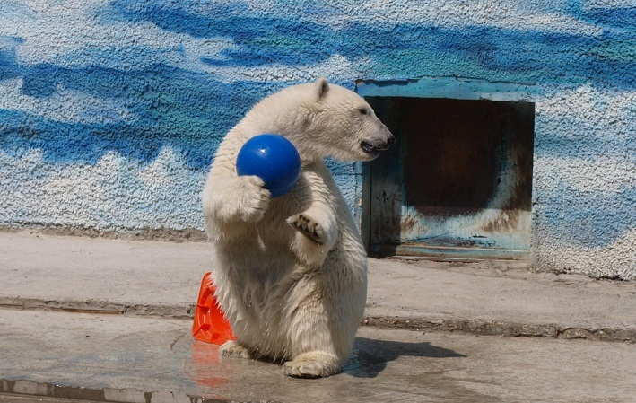

Один из крупнейших в России зоопарков занимает территорию в 90 га, сегодня его коллекция насчитывает свыше 5000 особей. Это около 400 видов животных, включая редкие виды. Из них особый интерес гостей неизменно вызывают три азиатских слона, розовые фламинго, японские журавли, орланы-белохвосты и другие обитатели зоологического парка в Ростове-на-Дону.
История ростовского зоопарка началась в 1927 году. Зоологический сад был открыт на участке, примыкающем к зданию бывшей мужской гимназии. Зоосад вырос из школьного уголка живой природы, первого на Дону носящего имя Альфреда Брема.
Со школьного двора зверей перевезли на городскую окраину, современный зоопарк встречает гостей на Зоологической, 3.
Среди экспозиций зоопарка южного города насчитывается несколько расположенных под открытым небом. Посетив эти уголки, можно увидеть лошадей Пржевальского, кенгуру, лам, страусов и других братьев наших меньших.